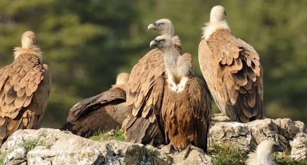

Vautours fauves
des gorges de
Galamus


Entaillées par les eaux de l'Agly, les gorges de Galamus forment un défilé calcaire spectaculaire à la frontière entre l'Aude et les Pyrénées-Orientales, sur le territoire du Parc naturel régional Corbières-Fenouillèdes, entre les communes de Cubières-sur-Cinoble et Saint-Paul-de-Fenouillet.

Une route étroite, taillée à même la roche, serpente au flanc des falaises et dessert l'ermitage Saint-Antoine-de-Galamus, niché dans la paroi et occupé depuis le haut Moyen Âge. Le nom même du site évoquerait la présence ancienne d'aigles dans ces gorges vertigineuses.
Aujourd'hui, ce sont les vautours fauves (Gyps fulvus) qui règnent sur les corniches rocheuses. Grands rapaces charognards à l'envergure dépassant 2,40 mètres pour un poids d'environ 10 kg, ils vivent en colonies, nichent en société sur les vires des falaises et ne s'attaquent jamais à des proies vivantes : leur alimentation est exclusivement composée de carcasses, ce qui en fait de précieux « éboueurs » de la nature.
Leur présence dans les Corbières s'inscrit dans un mouvement plus large de retour de l'espèce dans le sud de la France, après sa quasi-disparition au XXe siècle. Le site fait l'objet d'un suivi régulier dans le cadre du programme Natura 2000, avec des sorties d'observation organisées par la LPO Aude et le PNR Corbières-Fenouillèdes.
Saint-Paul-de-Fenouillet : bourg viticole du Fenouillèdes, porte d'entrée sud des gorges.
Château de Peyrepertuse : l'un des « cinq fils de Carcassonne », forteresse cathare perchée à quelques kilomètres.
Château de Quéribus : autre place forte cathare emblématique des Corbières, offrant un panorama sur la plaine du Roussillon.
Vignobles du Fenouillèdes et des Corbières : caves et domaines viticoles à découvrir sur la route des gorges.